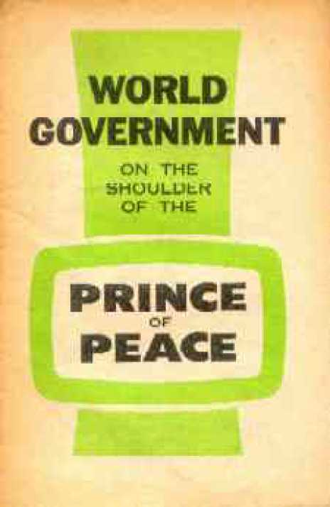

Due to various electronic necessities, insignificant formatting, punctuation, -capitalization, etc. and other minor editing has taken place. Spelling has been addressed especially where scanning has caused errors.
WORLD GOVERNMENT
ON THE SHOULDER OF THE
PRINCE OF PEACE
BEGINNING at the same time in Dublin, Eire, and Edinburgh, Scotland, on Sunday, June 13, 1965, the delivery of this message "World Government on the Shoulder of the Prince of Peace" . progressed around the globe during the succeeding weeks and months. Thereby hundreds of thousands of many lands and languages had their appreciation awakened and deepened’^ of what is one of the grandest prophecies on record, now due to reach the climax of its fulfillment. Too good to be lost, the message is being preserved in booklet form, for you and millions of others to read and to prove from the Holy Scriptures of prophecy.
-THE PUBLISHERS
'.^1 •?’.^-Publishers: <■'?■-/.;■
WATCHTOWER BIBLE AND TRACT SOCIETY OF NEW YORK, INC.
INTERNATIONAL BIBLE STUDENTS ASSOCIATION Brooklyn, New York, U.S.A.
•■•f..:^\7?Made in the United States of America
WORLD government for all mankind will mean only one supreme government over all the earth. It will be a symbol of the oneness of all the people, in peaceful human brotherhood. It is staggering to think of what such a government could do for the good of all the people under it, without favoritism toward anybody and with prejudice toward nobody. 2 Will such a world government ever come into existence over our one human family? Today the matter is at least being talked about very seriously, in view of threatening world conditions. One well-known encyclopedia* says on the subject: "The? <: tremendous problem of world government challenges citizens of the 20th century even more than it did the people of previous centuries." 3 Till now such a political rulership has never been undertaken with the support of all the people who would come under its sway. Humanly speaking,?^?’ world government needs quite a widespread desire of the people for it. The encyclopedia just quoted from says that a certain study of the subject "suggests that world government will not be established unless, first, there is present in
* The Encyclopedia Americana, edition of 1956, Volume 13, page 96. 1. What will world government mean and symbolize? ' ’ *^ 2. What is being done today by citizens of this twentieth century regarding world government?
3. The result of a certain study of the subject suggests that world government will not be established till what conditions are met?
4
the minds and hearts of many millions of the: people in various countries of the world a consensus, common desire or, group consciousness to form a base for world control; and, second, there is put into operation some type of governmental machinery which provides for making laws to control directly some but not all of the conduct of individuals in any nation or state of the world, for enforcing such laws by direct action on individuals, and for protecting groups of people against aggressive or oppressive conduct on the part of other groups."
4 Somebody may well ask, Do we not already have world government in the form of the United Nations organization, which has its headquarters in New York City? No, replies the same encyclopedia: "Neither the League of Nations nor the United : Nations was built on the broad group consciousness essential for world" government; nor was either [organization] given law-making power, law-enforcing power, or effective power to restrain aggressive or oppressive national or group conduct."
5 The late Pontifex Maximus of Vatican City, Pope John XXIII, did not consider the United Nations to be a world government. On Thursday, April 11,: 1 £7 : during the Holy Week of the year 1963, he signed his famous encyclical entitled "Pacem in Terris" ("Peace on Earth") , which he addressed not only to the "clergy and faithful of the whole world" but also "to all men of goodwill." In Part TV of this encyclical he spoke of a "public authority of the world community," and went on to say:
6 "It is our earnest wish that the United Nations:^ 4. Why have the League of Nations and the United Nations not been real world governments?.
5, 6. (a) Of what "authority" did Pope John XXIII speak in his encyclical "Peace on Earth" of 1963? (b) What "earnest wish" did the encyclical express regarding the United Nations?
organization - in its structure and in its means -may become ever more equal to the magnitude and nobility of its tasks, and that the day may come when every human being will find therein an effective safeguard for the rights which derive directly from his dignity as a person, and which are therefore universal, inviolable and inalienable? ;* rights. This is all the more to be hoped for since all human beings . . . are becoming more consciously aware that they are living members of a world community."
7 Apparently this encyclical sparked the holding of a four-day gathering in New York City, on February 17-20, 1965, of the International Convention of Peace under the sponsorship of the Center for the Study of Democratic Institutions. It is reported that this convocation "had as its purpose a study of the practical applications of Pope John's encyclical Pacem in Terris (Peace on Earth), published in April, 1963." More than 2,000 invited guests?? attended the sessions in the New York Hilton Hotel, these being from fourteen nations and including religious clergymen, scholars, scientists and statesmen. The secretary-general of the United Nations attended and spoke. The various speakers emphasized that a "strong international organizational body was essential in view of the alternative of nuclear war." (N.Y. Times, February 21, 1965) An Associated Press dispatch datelined New York, February 20, said:
8 "Famous British historian Arnold J. Toynbee declared today that civilization had reached a point where the very continuity of the human race depends on formation of World Government. 'It is the mutual interest of the nations to subordinate their national sovereignty to world authorities,'??. 7, 8. (a) What gathering did that encyclical apparently spark, and what "body" did the speakers emphasize as being necessary? (b) What did historian Toynbee say regarding the need for world government?
,/,.???? ?V?C'?????■.?.-■■?? „ he said. 'This is the only condition in which the nations can survive in an atomic age.'"
9 How should such an institution be produced?
Right-minded workers for it agree that world government should not mean the domination of the world by one powerful nation that seizes control and maintains itself in control by brutal force. The democratic nations of the West claim that international communism purposes to dominate the world; and at such a thing those nations shudder. Says the above-quoted encyclopedia on this feature of the subject:
10 "One of the largest groups working for the^ 'support and development of the United Nations into a world government with limited powers adequate to assure peace' is organized into United World Federalists, Incorporated. Leaders of world federalists are not likely to agree easily with those Russians who would develop world government by transforming the Union of Soviet Socialist Republics into a World Socialist Soviet Republic." 11 When we look at the stark realities of the day, is it not vain for us to hope for men to establish a satisfying world government? Today the cold war rages between Eastern and Western blocs of ; ? ' nations dominated by opposite political ideologies, with great rifts dividing even each of these blocs of nations, with internal political disagreements splitting up each individual nation. This gives us no basis for hoping that the needed world government will come even though we are all under the threat of nuclear war with all humanity as its victim. Love of national sovereignties is too strong in the hearts of men who have the spirit of this world. Fanatical devotion to
9, 10. (a) What should world government not mean? (b) What is the United World Federalists, Incorporated, working for, and how do its leaders disagree with Communist Russians?
11. What stark realities of the day dim the hope for men to set up a satisfactory world government?
.. ?'• 7 ~~'."'..-7^'7
political ideologies is too powerful among men who think they have the only workable system of government. A change of heart is not to be -expected in men who cannot be convinced against their will. If we have to judge by the experiments that men have made with all sorts of political
government and by the practical results of their experiments, what kind of world government would men give us anyway?
12 World government is necessary to the preservation and happiness of the human family. This fact is being admitted more and more as time goes on. But can it come only by human means? Is man of this so-called Brain Age the final one for us to look to for bringing in the all-necessary world government? Is there nothing beyond man and his boasted science to which to look and to appeal?. Happily there is! There is the great Governor of the universe, of which our earth is a tiny part. For Him it should not be hard to govern our earth. As earth's Creator, he should be expected to govern it. He will do so. Who can prevent him from doing so? 13 Today, after coming to see the need for it, men do not need to go on endlessly arguing as to what kind of world government it should be, how it shall be put in operation, and who shall hold the post of governor, and how such world governor shall be named and chosen. Long before this system of things got started, world government for all mankind had already been decided upon by the highest authority alive. Men in general have ignored this authority and his decision and purpose. For the leading men of this nuclear age to continue ignoring him means nothing but putting 12. For what is world government necessary, and to whom can we look to bring it in?
13 . Why is it now unnecessary for men to go on arguing about things having to do with world government, and to what will such continued arguing lead?
8 themselves to needless trouble and at last getting nowhere but into the very disaster that they hope to avoid by man-made world government.
14 The supreme authority is the one source of all rightful government. To him world government over mankind is nothing new, modern or recent. More than two thousand six hundred years before this nuclear age was born he caused a. . governmental decree to be published, that promises to be fulfilled in our own time. The decree was published in the eighth century before our
Common Era. At that time Assyria, with its capital at Nineveh, was the leading world power, but, despite its great aggressions, it did not become a world government. There was a city that Assyria threatened but never did subdue. This was;- •7->z -■■■ •_> Jerusalem. In this city the following governmental decree was pronounced and published; and here we give the translation of the decree into English, approved of by the late Pope John XXIII:
15 "A child is born to us, and a son is given to us, and the government is upon his shoulder: and his name shall be called, Wonderful, Counsellor, God the Mighty, the Father of the world to come, the Prince of Peace. His empire shall be multiplied, and there shall be no end of peace: he shall sit upon the throne of David, and upon his kingdom, to establish it and strengthen it with judgment and with justice, from henceforth and for ever: the zeal of the Lord of hosts will perform this." -Isaiah 9:6, 7, Douay.
■ THE PROMISED PRINCE
16 In those words God foretold the setting up of a world government of endless peace, for the ruler-14, 15. (a) Why is the subject of world government nothing new to the supreme authority? (b) What governmental decree did this Authority cause to be published in Jerusalem in the eighth century B.C.E.?
16, 17. (a) What did that governmental decree foretell? (b) How was that title "Prince of Peace" misapplied in India not long ago?
'L'9O7' ship would rest upon the shoulder of one who was to be called the Prince of Peace. This title was to be borne by no one else but the one who would rule over mankind. Not many years ago the title was wrongly applied to a mighty general and political ruler. While still holding the presidency of the i?--mightiest military republic of the Western bloc of nations, he was paying a courtesy visit to India. December 9, 1959, was the date of his arrival in India's capital city, New Delhi, and one of many magazines reporting on this event said: 17 "India had not experienced such a mob scene since the death of [Mahatma] Gandhi. More than a
million villagers and city folk thronged New Delhi's streets waving and shouting . . . ("Long live Eisenhower!") . . . ("Hail Eisenhower!") Above the hue and cry stretched red and white banners proclaiming: 'EISENHOWER - PRINCE OF PEACE.' " -The Watchtower, as of September 15, 1960, page 549. 18 However, sad to relate, since that event, his own nation took part in warfare in southeast Asia, which threatened to grow into a conflict that would take peace from the whole earth. All this proves how vain it is to tack the title "Prince of? .<•••> Peace" onto a mere man, even though some Hindus thought that he was Vishnu Ka Avatar, a reincarnation of the god Vishnu. True, the;< \
governmental decree of the Lord of hosts said that the promised Prince of Peace would also be called God the Mighty, but he could never be president of the United States of America nor of any other<^ ? republic on earth today. The Lord of hosts says that the Prince of Peace had to "sit upon the throne of David, and upon his kingdom." 19 This called for the Prince of Peace to be a
18. Why could not the promised Prince of Peace, also called God the Mighty, be president of any republic on earth> today?
19, 20. (a) What did, that call for the Prince of Peace to be as to his descent? (b) What covenant requiring this did the Lord of hosts make with faithful David?
' < 1 -:<.^.<io
descendant of David of Bethlehem, who was king of Jerusalem in the eleventh century before our Common Era and whose kingdom extended finally from the Euphrates River southward to the River of Egypt. (Genesis 15:18) To this faithful David, the Lord of hosts made a solemn promise that kingdom power would remain in his family for all time and that his kingdom would therefore be forever. (2 Samuel 7:1-17) In the language of the Douay<./:<^ Version of the Holy Bible, one ancient inspired psalmist worded God's promise in this way: 20 "Then thou spokest in a vision to thy saints, and saidst: I have laid help upon one that is mighty,<-,-:--H and have exalted one chosen out of my people. I have found David my servant: with my holy oil I?;.?;' have anointed him... . my mercy I will not take
away from him: nor will I suffer my truth to fail. Neither will I profane my covenant: and the words that proceed from my mouth I will not make void. Once have I sworn by my holiness: I will not lie unto David: his seed shall endure for ever. And his throne as the sun before me: and as the moon perfect for ever, and a faithful witness in heaven." -Psalm 88:20-38, Douay; 89:19-37, King James Version.
21 Since the Lord of hosts decreed concerning the Prince of Peace that "his empire shall be multiplied, and there shall be no end of peace," this Prince upon whose shoulder the government is laid must be the Permanent Heir of King David. For this to become true, the Heir of David's everlasting?-/-kingdom must be born on earth in David's line. His birth was foretold, and it was to mark a turning??// point in history. Another prophecy of the birth of this Prince was made by the prophet Isaiah at a time when the kingdom of the royal house? - r: ?-'?/-^ 21, 22. (a) What, therefore, must this Prince of Peace be as to heirship? (b) What other prophecy did Isaiah give regarding the birth of this Prince?
11
of David at Jerusalem was threatened by an alliance of enemy nations. To the king then ruling, Isaiah said:
22 "Hear ye, therefore, O house of David: Is it a small thing for you to be grievous to men, that you are grievous to my God also? Therefore the Lord himself shall give you a sign: Behold a virgin shall conceive, and bear a son, and his name shall be called Emmanuel." -Isaiah 7:13,14, Douay.
23 The birth of this son has long been a historical fact. It is noted in the records of history that are beyond denial and that cannot be wiped out, to prove that the Lord of hosts has performed this miraculous birth, as he promised that he would do. A tax collector of the Roman Empire, named?r? Matthew Levi, explains how the birth occurred by divine power. He names the virgin mother as Mary. To call attention to the fact that this was a fulfillment of the prophecy of the Lord of hosts by means of Isaiah, Matthew Levi says: "Now all this was done that it might be fulfilled which the Lord spoke by the prophet, saying: Behold a virgin shall be with child, and bring forth a son, and they shall call his name Emmanuel, which being interpreted is, God with us." (Matthew 1:22, 23, Douay) According to God's command, the child was named Jesus.
24 A medical doctor of the first century of our Common Era made an investigation to establish the truthfulness of the then current report about this miraculously born Jesus. Then this Doctor Luke' wrote the facts to his friend Theophilus to strengthen the faith of this believer. Doctor Luke reports that at the time that Mary was told that'?/: 23. What does Matthew Levi write regarding the birth of this son as being a historical fact and as a fulfillment of divine prophecy?
24, 25. (a) What investigation about birth did Doctor Luke of our first century make? (b) What did he report the angel Gabriel as saying to Mary regarding the son to be born?
12
she was God's choice for becoming the virgin mother of the Son of God, the angel Gabriel said to her: 25 "Behold thou shalt conceive in thy womb, and shalt bring forth a son and thou shalt call his name Jesus. He shall be great, and shall be called the Son of the Most High: and the Lord God shall give unto him the throne of David his father; and he shall reign in the house of Jacob for ever. And of his kingdom there shall be no end.... The Holy Ghost shall come upon thee, and the power of the Most High shall overshadow thee. And therefore also the Holy which shall be born of thee shall be called the Son of God.... no word shall be impossible with God." -Luke 1:28-37, Douay.
26 Doctor Luke supplied historical facts and figures by means of which we can calculate the year of Jesus' birth. He shows how the birth of Jesus came to take place at the city of Bethlehem, as foretold by the prophet Micah seven centuries earlier. (Luke 2:1-7; Matthew 2:1-16; Micah 5:2) The birth took place in a stable in an overcrowded city, where a person could be overlooked for the crowd. But the birth was not allowed to go without witnesses : ' besides the child's mother Mary and foster-father
Joseph. God raised up witnesses to this birth of his Son. He sent an angel to give to the shepherds out in the fields at Bethlehem the needed directions on how to find this newborn babe in a stable manger. 27 The angel identified who the child really was and told what his future was to be by saying: "For, this day, is born to you a Saviour, who is Christ the Lord, in the city of David." Besides those shepherd witnesses, there were also heavenly witnesses, for, after the announcement of the child's birth, 26,27. (a) Information by Luke helps us to determine what regarding the birth and its location? (b) According to Luke, how did God raise up witnesses of the child's birth that night?
1 -■ V/-13 "suddenly there was with the angel a multitude of the heavenly army, praising God, and saying: Glory to God in the highest; and on earth peace to men of good will." Right after that the shepherds found the newborn babe just as described and became eyewitnesses of the birth of the Son of God. Then they returned to their flocks, "glorifying and praising God, for all the things they had heard and seen, as it was told unto them." -Luke 2:1-20, Douay.
28 This child was to become God's Christ or Anointed One, and he was to become also King David's Lord. King David, to whom God's promise of an everlasting kingdom was made, ruled over only a small land area in the Middle East. Also, according to what the angel Gabriel said to Mary, her Son Jesus was to be given "the throne of David his father" and was to "reign in the house of Jacob," that is to say, in the nation that descended from the patriarch Jacob the grandson of Abraham. How, then, could the government that was to be laid upon the shoulder of Jesus Christ be a world government, a government over all mankind?
29 That his government would be greater than that of King David was indicated in the angel's announcement that the newborn Jesus would/ : become, not only the foretold Christ, but also Lord, that is to say, Lord over even King David the king of Israel or Jacob. David himself indicated that he would have a Lord over him, when he wrote down what the Lord God said to him. David wrote: "The Lord said to my Lord: Sit thou at my right hand: until I make thy enemies thy footstool. The Lord will send forth the sceptre of thy power out of Sion: rule thou in the midst of thy enemies." -Psalm 109:1, 2, Douay; 110:1, 2, King James Version.
28. (a) The child was to hold what position toward King David? (b) What question arises as to the child's government, and why?
29. (a) What did his lordship over King David indicate? (b) How did David indicate that he would have a Lord over him?
-V1 ^v^14
:////|tHE WRONG WORLD GOVERNMENT REFUSED
30 In the first century of our Common Era, with the events of which we now deal, the Roman Empire was the dominant world power. But it was not a world government. Many governments outside the boundaries of the empire did not acknowledge/^// Rome as the central government of the earth. They clung to their national sovereignties. Hence no?'//' successor to the Caesars of Rome has become a world governor with world government resting upon his shoulder. According to mundane history, the fifteenth year of the Roman emperor, Tiberius Caesar, ended on August 13 of the year 29. It was before that date during the fifteenth year of Tiberius that John the Baptist appeared in the ^//// Middle East, proclaiming the nearness of the kingdom of the heavens, or the kingdom of God. This was a government higher than that of imperial Rome.
31 About six months after John the Baptist began his work and announced the coming of someone greater than he was, Jesus Son of Mary came to him to be baptized. He had no sins to confess, but he insisted that John baptize him. After he did so, John got the sign that he had been told to watch for. Matthew 3:16, 17 reports:
32 "And Jesus being baptized, forthwith came out of the water, and lo, the heavens were opened to ■// him: and he saw the Spirit of God descending as a
dove, and coming upon him. And behold a voice from heaven, saying: This is my beloved Son, in whom I am well pleased." -Douay. See also John 1:29-34. 33 There Jesus became the Christ, for there God
30. (a) Why has no successor of the Caesars of Rome been a world governor? (b) In what year did John the Baptist appear preaching?
31, 32. (a) When did Jesus come first to John the Baptist, and why? (b) What sign did John get for which he was.:'<^r waiting?
33. (a) At that event, into what position did the baptized Jesus come? (b) What covenant did God make with Jesus when anointing him with spirit?
15
his Father anointed him with the holy spirit. From then on he could be called Jesus Christ. His forefather, the shepherd David, had been anointed with oil to become king of his nation. Likewise, Jesus was anointed, not with oil, but with holy spirit from heaven. This designated him to be king, yes, even Lord over King David because of coming into a higher kingdom. By being born from Mary in the line of David, Jesus had a natural right to David's throne and kingdom, which were earthly. However, by being anointed with holy spirit from God in heaven, Jesus became heir to a heavenly kingdom. When anointing him, God made a;= covenant with Jesus his Son for a heavenly kingdom; just as Jesus later said to his faithful apostles: "I dispose to you, as my Father hath disposed to me, a kingdom; that you may eat and drink at my table in my kingdom; and may sit upon thrones." (Luke 22:29, 30, Douay) This kingdom surpassed David's.
34 Forty days after Jesus was baptized and anointed with holy spirit, he was offered world government. By whom? Not by God who had made with him the covenant for the heavenly kingdom.^ No, but by Satan the Devil. Jesus was then completing a fast of forty days. It was then that the Adversary, the Devil, made an offer that ran counter to God's covenant for the everlasting heavenly kingdom. The Devil tried to tempt Jesus Christ with an offer of earthly world government.
Regarding this one of three great temptations that were placed before Jesus, Doctor Luke says: 35 "And the Devil led him into a high mountain, and shewed him all the kingdoms of the world in a moment of time. And he said to him: To thee will I give all this power, and the glory of them; for to me they are delivered, and to whom I will, 34, 35. (a) What was offered to Jesus forty days after his baptism, and how? (b) What did Jesus say in answer to the offer?
16
I give them. If thou therefore wilt adore before me, all shall be thine. And Jesus answering said to him: 'It is written: Thou shalt adore the Lord thy God, and him only shalt thou serve.'" -Luke 4: 5-8, Douay.
36 You can imagine what might have happened to the pagan Roman emperor of that day, if Jesus had accepted the Devil's offer. Would the Holy Roman Empire have been set up in the year 800 C.E., to last for over a thousand years? Would ancient Jerusalem have become the world capital? But such a world government as the Devil proposed for < Jesus Christ would have meant a world;--...’?' government under the" invisible control of the Devil, whom Jesus called "the prince of this world" and whom the Christian apostle Paul called "the god of this world." (John 16:11; 2 Corinthians 4:4, Douay) It would have meant a world government no better than the one that is advocated today by the United World Federalists, Incorporated, or by historian Arnold J. Toynbee. It would have meant no kingdom of God, no kingdom of the heavens,;.^ with the anointed Prince of Peace in the throne. Well, then, did Jesus Christ do a disservice tov;? mankind by refusing world government from Satan? Not at all!
37 How thankful we can be that Jesus stuck to the covenant that the Lord God had made with him for the everlasting heavenly kingdom! He refused to worship anybody but the Lord his God. About three and a half years later the "kingdoms of the world" that the Devil had offered to Jesus as a reward for Devil worship turned upon Jesus and brought about his death. The fanatical mob in Jerusalem rejected him as their king and shouted: "We have no king but Caesar." King Herod An-
36. What would such a world government have meant for mankind, and why was Jesus' refusal of it no disservice to mankind?
37. About three and a half years later, how did the "kingdoms of the world" treat Jesus at Jerusalem?
.. ?• 1 ??? _1 177-^- .-?;17:;v? _'s: J- -^X.. S
tipas of Galilee made no effort to save Jesus from execution; and Pontius Pilate the Governor representing Imperial Rome turned the innocent Jesus over to be executed, to please the howling*-' mob. -John 19:14-22; Luke 23:1-12; Acts 4:25-29. 38 That was disgraceful conduct indeed! But can Christendom today find any ground for complaining at such conduct on the part of peoples and .-2./; <: kingdoms nineteen hundred years ago? Are not the "kingdoms of the world" of today doing the same things, in effect or in principle? They fought World War I and World War II, but not for the kingdom of God. In the year 1919 they chose the League of Nations, and in 1945 the United Nations, and thus refused the kingdom of the heavens by Jesus Christ. In their extreme nationalism and their^’x jealous holding onto their national sovereignties they keep saying before the Lord God: "We have no king but Caesar." Besides that, what have they done to those true Christians who have loyally * chosen Jesus Christ as king instead of Caesar? The historical records concerning this speak for themselves.
LAYING THE BASIS FOR RIGHT WORLD GOVERNMENT
39 What, however, did those ancient "kingdoms of the world" really accomplish by opposing the One whom God anointed to be ruler in the promised* kingdom of God? Certainly they did not block God's purpose for a righteous world government over all mankind living and dead. How, God defeated the malicious intentions of the "kingdoms of the world" was explained by the Christian
38. Why cannot Christendom complain at such disgraceful conduct of nineteen centuries ago?
39,40. (a) What did those ancient "kingdoms of the world" accomplish by opposing God's Anointed One? (b) How, on Pentecost, did the apostle Peter explain how God defeated the intentions of the "kingdoms of the world"?
\i'v^,'?<:18
apostle Peter fifty-one days after Jesus Christ was put to death.
40 Speaking to thousands of Jewish celebrators of the festival of Pentecost in Jerusalem, Peter said: "Ye men of Israel, hear these words: Jesus of Nazareth, a man approved of God among you, by miracles and wonders and signs, which God did by him in the midst of you, as you also know: this same being delivered up, by the determinate counsel and foreknowledge of God, you by the hands of wicked men have crucified and slain. Whom God hath raised up, having loosed the? sorrows of hell, as it was impossible that he should be holden by it. ... This Jesus hath God raised again, whereof all we are witnesses. Being exalted therefore by the right hand of God, and having received of the Father the promise of the Holy?" / Ghost, he hath poured forth this which you see and hear. For David ascended not into heaven: but he himself said: The Lord said to my Lord, sit thou on my right hand, until I make thy enemies thy ' footstool. Therefore let all the house of Israel know most certainly, that God hath made both Lord and Christ, this same Jesus whom you have crucified." -Acts 2:22-36, Douay.
41 In this most startling way Jesus, the one-time carpenter of Nazareth, was made "Christ the prince," foretold by the angel Gabriel to the prophet Daniel. (Daniel 9:22-26, Douay) By his exaltation to heaven, to God's own right hand, this "Christ the prince" was made the "Lord" over his forefather, King David. This exaltation fulfilled God's promise as contained in the covenant that he made with David for an everlasting kingdom; just as this covenant is phrased for us in the inspired psalm: "He shall cry out to me: Thou art\\/^':<':? 41, 42. (a) By thus exalting Jesus to heaven, how did God fulfill his covenant regarding the Prince's position, as set out in Psalm 88:27, 28, Dy; 89:26, 27, AV? (b) Thus this exaltation provided the necessary condition for what
regarding the Prince?
■ A.’19r.<\£; my father: my God, and the support of my salvation. And I will make him my firstborn, high above the kings of the earth." -Psalm 88:27, 28, Douay; 89:26, 27, King James Version.
42 This exaltation of Jesus Christ to God's right hand in heaven to be the "Lord" of King David and to be "high above the [other] kings of the earth" provided the necessary condition for world government to be laid upon the shoulder of the Prince of Peace.
MORE THAN SUPRANATIONAL
43 Men on earth who advocate man-made world government argue that it must be supranational, that is to say (according to the dictionary), "extending beyond the political limitations inhering in the nation-state or being free of such limitations." Even of themselves, men might set up such a supranational government to rule the world of mankind. But it would never fully meet the needs and thus never prove successful. The successful world government needs to be more <;:? than supranational. It needs to be supranatural, that is to say, above the natural or transcending the natural, or supernatural. It needs to be superhuman, beyond anything that we human creatures can produce. Only God, who is not earthly or natural, can provide such a supranatural government for all the human family. Only a person who is supranatural and superhuman could serve with success in the post of world governor. That is why the heavenly "Christ the prince" is needed for the job.
44 That supranatural world government will not come from the "kingdoms of the world," which Jesus Christ refused to accept at the hands of the 43. (a) What do men argue that the world government should be politically, and why would it not prove successful? (b) Why is the heavenly Prince of Peace needed for the job?
44. Will the supranatural world government be part of the "kingdoms of the world," and when did Jesus speak
definitely about that?
\720^/</’;\'*^'^----.-
Devil. It will not be a transformation, enlargement and refinement of the United Nations organization of today. It will be no part of the "kingdoms of the world." Jesus Christ said so, when he stood before the Roman governor Pontius Pilate to disprove the false charge that he was a seditionist against ^ Rome. After the governor asked: "Art thou the king!? of the Jews? . . . What hast thou done?" Jesus answered: "My kingdom is not of this world. If my||| kingdom were of this world, my servants would certainly strive that I should not be delivered to the Jews: but now my kingdom is not from hence." -John 18:33-36, Douay.
45 Thus the kingdom of Jesus Christ was not to be either of human source or of devilish source. It was to be from God. It was to operate from heaven. It was to be inclusive of the kingdom of David but far greater than David's Middle Eastern kingdom.
When on earth Jesus spoke of himself as the Son of man. More than five hundred years before Christ, God revealed that the government of this Son of man would be, not a national one, but a worldwide one. To his prophet Daniel God sent a dream vision during the first year of King Baltasar (Belshazzar) of Babylon. In the dream vision Daniel saw four ferocious beasts, one after another, and God's angel explained the symbolic meaning of these wild beasts, saying:
46 "These four great beasts are four kingdoms, which shall arise out of the earth. But the saints of the Most High God shall take the kingdom: and they shall possess the kingdom for ever and ever." -Daniel 7:1-18, Douay; also King James Version.
47 After Daniel tells of the opening of the divine 45, 46. (a) From what source would Christ's kingdom be, and how would it compare with that of King David? (b) In the dream vision sent to Daniel, what did the four beasts symbolize, but who took possession of the kingdom?
47. After the execution of the four beasts, what did Daniel see in the vision of the night?
21 court in heaven and the execution of God's judgment upon the four symbolic beasts, he says:|l|
"I beheld therefore in the vision of the night, and lo, one like the son of man came with the clouds of heaven, and he came even to the Ancient of days: and they presented him before him. And he gave him power, and glory, and a kingdom; and all peoples, tribes and tongues shall serve him: his power is an everlasting power that shall not be taken away: and his kingdom that shall not be destroyed." -Daniel 7:13, 14, Douay.
48 Daniel (7:27) plainly repeats that the saintly;; footstep followers of Jesus Christ, the Son of man, would share with him in this heavenly kingdom. However, to have the government of all the world of mankind rest upon his shoulder will be a tremendous responsibility for the Prince of Peace, the Son of man. Yes, but never fear, he can welh^>\ take care of the job. Before he ascended from the earth and returned to heaven, he said to his disciples: "All power is given to me in heaven and in earth." (Matthew 28:18, Douay) Even when he was on earth as a man, he showed his willingness and his ability to undertake world jobs and problems.
A BIG WORLD PROBLEM
49 One of the biggest world problems is the removal of the "sin of the world." This problem is being pointed up in these days by the steady increase of crime throughout the earth. The Son of God purposely came to earth to face up to this world problem, though it called for the greatest unselfishness and self-sacrifice, the laying down of 48. (a) Who will share with him in his heavenly kingdom? (b) Why do we not need to fear regarding his ability to; shoulder the responsibility of world government?
49. (a) What big world problem did Jesus come to earth to face and dispose of? (b) What did John the Baptist indicate by referring to Jesus as the "Lamb of God" that takes away the world's sin?
:>>> 22 his human life innocently. After forty days of fasting and then being tempted by the Devil, the baptized and anointed Jesus returned to John the Baptist. When seeing him again, John the Baptist
pointed to him and said to his disciples: "Behold the Lamb of God, behold him who taketh away the sin of the world." (John 1:29, Douay) John the Baptist was the son of a Jewish priest and knew that lambs were sacrificed at the temple in < r: Jerusalem for the spiritual benefit of his nation in its relationship with God. So when John called-. Jesus "the Lamb of God," it indicated that God had provided his Son Jesus for sacrifice, that his blood might be shed for cleansing away the sinfulness of the whole world. :
50 An inspired letter to the Christian Hebrews tells of how God established his covenant with the '?: nation of Israel and gave the Law through his mediator Moses for Israel to obey. Then Hebrews 9:22 remarks: "And almost all things, according to the law, are cleansed with blood: and without shedding of blood there is no remission." JesusS<.? knew that, in order to provide the human blood to cleanse away the sins of fallen mankind, he had to lay down his human life in innocence. He knew that the prophecy of Isaiah, chapter fifty-three, must be fulfilled toward him. As it is written:
51 "But he was wounded for our iniquities, he was bruised for our sins: the chastisement of our peace was upon him, and by his bruises we are healed. All we like sheep have gone astray, every one hath turned aside into his own way: and the Lord hath laid on him the iniquity of us all. He was offered because it was his own will, and he opened not his mouth: he shall be led as a sheep to the slaughter, and, shall be dumb as a lamb before
50, 51. (a) As pictured in the Law given through Moses, what was necessary for cleansing away the sins of fallen mankind? (b) What prophecy of Isaiah did Jesus know had to be fulfilled toward him?
23
his shearer, and he shall not open his mouth. Therefore will I distribute to him very many, and he shall divide the spoils of the strong, because he hath delivered his soul unto death, and was reputed with the wicked: and he hath borne the sins of many, and hath prayed for the transgressors." -Isaiah 53:5-7, 12, Douay.r
52 Near the end of his earthly life Jesus said to his disciples: "The Son of man is not come to be ministered unto, but to minister, and to give his life a redemption for many." -Matthew 20:28, Douay.
53 Also, shortly after he miraculously fed an ' ~;':j£ ■5/ audience of five thousand men, with women and children, from five bread loaves and two fishes, he said: "I am the living bread which came down from heaven. If any man eat of this bread, he shall live for ever; and the bread that I will give, is my flesh, for the life of the world." (John 6:51, 52, Douay) Hence, when the apostle John wrote to fellow, believers, he was obliged to say: "But if any man sin, we have an advocate with the Father, Jesus Christ the just. And he is the propitiation for our sins: and not for ours only, but also for those of the whole world." -1 John 2:1, 2, Douay.
54 All the blood of animal victims shed in religious ceremonies, yes, more than that, all the human blood of warriors shed on the battlefields all through the past centuries, could not take away sin and its penalty, death, from condemned mankind. But the blood of the perfect, unblemished, sinless Lamb of God, Jesus Christ, provided the means acceptable to God for cleansing away the "sin of the world," and for giving mankind a clean
52, 53. (a) What did Jesus say about giving a redemption for many? (b) For whose life did Jesus give his flesh, and for whose sins did he become the propitiatory sacrifice?
54, 55. (a) How does the blood of the Lamb of God compare with that of animal sacrifices in religious ceremonies or of warriors dying on the battlefields? (b) According to'--,.^;. Hebrews 5:5, 6, what did God make his Son to be for this sacrificial service?
24 record with God. This provision opened up the way for mankind to gain everlasting life on a Paradise earth in God's righteous new order of things under the heavenly kingdom of his Christ. To have this sacrificial service carried out, God made his Son his High Priest, to serve in behalf of all the sinful world of mankind. This is the teaching of Hebrews 5:5, 6 (Douay), which says:
55 "So Christ also did not glorify himself, that he might be made a high priest: but he that said unto
him: Thou art my Son, this day have I begotten<<?-\-.. thee. As he saith also in another place: Thou art a priest for ever, according to the order of Melchisedech."
56 He is now no earthly priest, but, as Hebrews 8:1 reminds us: "We have such an high priest, who is set on the right hand of the throne of majesty in the heavens." (Douay) By presenting to God the value of his perfect human sacrifice, this High-.';/“\ Priest paved the way for mankind to be reconciled to God, to bring them into a sweet peace with God. This is one of the reasons why this One, on whose shoulder is laid the world government for God's new order of things, is called "Prince of Peace." At the sacrifice of his own perfect human life, he made provision for the everlasting life of all those of mankind who obey him. This includes also the resurrection of the dead, for Jesus Christ said: "I am the resurrection and the life"; and, "The hour cometh, wherein all that are in the graves shall hear the voice of the Son of God. And they that have done good things shall come forth unto the resurrection of life." -John 11:25; 5:28, 29, Douay.
57 By giving everlasting life to his earthly sub-56. (a) Because of his sacrificial work, why is he rightly called the Prince of Peace? (b) What did Jesus say to show whether his providing for mankind's everlasting life was for only the living?
57. (a) Why will the title "Father of the world to come" also prove fitting to the Prince of Peace? (b) This raises what question regarding human world government?
< 2 ^■<,■^.<25
jects, the heavenly Prince of Peace will act like a father to them. For this reason another of his fitting titles is "Father of the world to come," or "everlasting Father." (Isaiah 9:6, Douay; King James Version) In fulfillment of this fatherly office he will perform cures such as he did when he was the Son of man on earth and he will impart perfect bodily and mental health to obedient mankind, lifting them up finally to vibrant human perfection on an earth transformed everywhere into a?->< Paradise like the garden of Eden, the "paradise of pleasure." (Genesis 2:8, Douay) What world government, set up by the politicians of this world of today, could give such benefits to even those living under such a government, not to speak of the countless billions of those who died before it was established?
*-^REMOVING A SUPERHUMAN OBSTACLE
58 For ages of time there has been for mankind a.-->\ superhuman obstacle to universal peace or to freedom from war. That obstacle has been Satan the Devil and his demons. Worldly-wise men may laugh at his existence and may deny that he has any part in human affairs, but Jesus Christ did not do so. He resisted actual temptation at the instance of Satan the Devil and called him "the prince of this world." (John 16:11, Douay) That Satan the Devil is really worshiped by men, unknown to themselves, the apostle Paul indicated when calling him "the god of this world." In keeping with this fact, Satan the Devil offered to give Jesus a world government if Jesus would adore and worship him. (2 Corinthians 4:4; Matthew 4: 8-10, Douay) Satan the Devil is not alone but has demon angels, whose number we do not know. The last book of the Holy Scriptures says that Satan
58. (a) For ages what has been for mankind an obstacle to universal peace? (b) What could no human world government ever do regarding this obstacle?
2 26 '.-fv':
the Devil "seduceth the whole world." (Apocalypse 12:7-9, Douay) No world government set up by men could ever throw off the backs of mankind this invisible, spiritual, superhuman god and prince of this world, and his demons.
59 That is why the situation calls for a world? governor who also himself is invisible, spiritual, superhuman and more mighty than the "god," Satan the Devil, and his demon angels. It calls for a world governor who can seize this false god of the world and bind him and put him and his demons out of action. Such a needed world governor the Lord God furnishes us in his heavenly Son, the "Prince of Peace." In the last book of the Holy Bible, the Apocalypse, which is "the Revelation of
Jesus Christ, which God gave unto him, to make known to his servants the things which must shortly come to pass," it foretells that the Prince of Peace will restrain Satan and his demons.'.
(Apocalypse 1:1, Douay) In symbolic language it gives us a picture of the birth of God's kingdom in the heavens.
60 Immediately following this marvelous event a great battle takes place in heaven, and Satan the Devil and his demon angels are cast down to the. M earth, where he "hath but a short time" for further wicked activities among mankind. This casting of Satan and his demons to the earth produces a time of "woe to the earth, and to the sea." (Apocalypse 12:1-12, Douay) Why should any observing man or woman doubt that we are in that "short time" of unparalleled woe for people on the earth and on the sea, right now? World distress due to such woe makes men clamor for world government.
59, 60. (a) What kind of world governor does the situation therefore call for, and how does the Prince of Peace meet^' the need? (b) In what "short time" are we doubtless living, and for what do men clamor?
27
61 Nineteen centuries ago Jesus was asked by his apostles what would be the sign of his coming into God's promised world government. The lengthy answer of Jesus to this question you may read in Matthew, chapters twenty-four and twenty-five; Mark, chapter thirteen, and Luke, chapter twenty-one. Jesus foretold that the "beginnings of sorrows" would be international war, with "kingdom against kingdom," and pestilences, famines and earthquakes. (Matthew 24:7, 8, Douay) Did such "beginnings of sorrows'' strike us in the year 1914 when the first world war broke out, to be accompanied by these other horrors and disasters? If they did not do so then, when in . mankind's history should we place them? What must we yet expect that could be called "the beginnings of sorrows"?
62 Now is the time to act wisely and to read the unmistakable sign that shows the meaning of tilings according to God's prophetic Word. We do not want to be like the people in the days of Noah before the great flood. Concerning them Jesus said in this same prophecy about the "beginnings of sorrows" and the things to follow them: "They knew not till the flood came, and took them all. - / away; so also shall the coming of the Son of man be." (Matthew 24:37-39, Douay) If the "beginnings of sorrows" just a half century ago were so. terrible, what will the grand climax of sorrows, the closing features of those sorrows, be like? So now is the time to turn to the world government resting on the shoulder of the Prince of Peace. It alone can protect and preserve us through the end of this system of things now so near. It alone can resurrect our dead loved ones from the grave to live under a perfect rulership.
61. (a) Where did Jesus answer the question regarding the sign of his coming into world government? (b) Where>^;^S: should we reasonably locate the "beginnings of sorrows" that Jesus foretold?
62. (a) According to Jesus' prophecy, how can we be different from the people who perished in the flood of Noah's day? (b) To what should we turn now, and why? 228
63 The "kingdoms of the world" must make way before the world government of the Prince of Peace. So must Satan the Devil and his demon angels. These seducers of the whole world, these breeders of war, turmoil, crime, moral decay and false worship must be bound and imprisoned within an abyss, far away from any and all contact with men on earth. With this superhuman accomplishment the "short time" of terrible "woe to the earth, and to the sea," will cease.
64 Then the world government on the shoulder of the Prince of Peace will hold uncontested sway. over all the earth. Its program of work for all/>7:;S\: mankind, living and dead, will be no so-called Five-Year Plan or plan that is limited to the brief span of life of a human ruler. According to God's Word it will be a thousand-year program of work, without interference of the Devil and his demons.
(Apocalypse 20:1-6, Douay) The Prince of Peace now has immortal heavenly life and, as world? governor, he will need no successor and there will
be no successor. -Hebrews 7:15-25, Douay.
65 Clothed with all power in heaven and on earth as he now is, what good he will be able to accomplish for all mankind during the thousand years of his reign with his glorified church or congregation! How grandly this will redound to the glory of God his Father! Not in vain, then, did the army of heavenly angels say in unison at the time of his human birth nineteen centuries ago: "Glory to God in the highest; and on earth peace to men of good will." (Luke 2:14, Douay) The prophecy that 63. Who must make way before the world government of the Prince of Peace, and when will the "short time" of present woe cease?
64. For how long will the program of work of that world government run, and why will this require no successor in the governorship?
65. (a) To whose good and to whose glory will the carrying out of that program of work redound? (b) Why will the angels not have said in vain what they did in Luke 2:14? \ 1?: 29
foretold his birth, his government and his titles says: "His empire shall be multiplied, and there shall be no end of peace." (Isaiah 9:6, 7, Douay) Consequently the future for all mankind is sure. The zeal of the Lord of hosts will perform the prophecy.
66 All you for whom the Lamb of God died and was raised to life again and exalted to heaven, do you want to enjoy that endless peace? Since you do, then from henceforth seek that everlasting life as offered by the Lord God through his Prince of Peace and through the world government resting on his||l shoulder.
66. To enjoy the endless peace promised to men of goodwill, what should we henceforth seek?